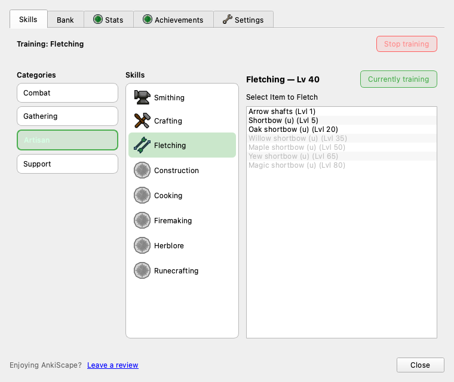

The backend pilot was gated behind visible_in_skill_hub=False. That gate is open: Fletching now has a real target panel, level/material gating, active-skill selection, the OSRS icon, and an offscreen test. Verified visually below — no Anki restart used.
Rendered offscreen (developer mode, Lv 40)

Artisan → Fletching → target list. Oak shortbow enabled at Lv 40; higher tiers greyed by level gate.
What landed (frontend)
1
_build_fletch_list target panel, level + material gating via can_fletch_item_pure
Data accuracy check — you were right about arrow shafts
OSRS wiki confirms: "Fletching higher tier logs will now give a greater number of arrow shafts." Our current data models only normal logs → 15 shafts (plus shortbow recipes, which are accurate). The per-tier shaft yields are missing:
Log
Level
XP
Shafts
In data?
Normal
1
5
15
yes
Oak
15
10
30
missing
Willow
30
15
45
missing
Maple
45
20
60
missing
Yew
60
25
75
missing
Magic
75
30
90
missing
Redwood
90
35
105
missing
Backend handoff (GPT)
Two data tasks remain — backend only
A
Per-tier arrow shafts in constants.py FLETCHING_DATA. Needs disambiguated target keys (every tier outputs the same Arrow shaft item at different qty), e.g. "Arrow shafts (oak)". Frontend will list them automatically. The shortbow (u) recipes already in the table are correct — leave them.
Optional: pass can_fletch_any_item as the 3rd arg to refresh_skill_availability from the review hook so Fletching auto-enables mid-review. The frontend slot is already in place.
Backend: add per-tier arrow-shaft Fletching recipes to constants.py FLETCHING_DATA using OSRS wiki values (normal 15 / oak 30 / willow 45 / maple 60 / yew 75 / magic 90 / redwood 105; levels 1/15/30/45/60/75/90; XP 5/10/15/20/25/30/35). Use disambiguated target keys since all tiers output the same "Arrow shaft" item. Keep existing shortbow (u) recipes. Add unit tests. Do not touch ui.py.
Verify in Anki (when you restart)
Skills tab → Artisan → Fletching. You should see the new icon, "Select Item to Fletch", and rows gated by your Fletching level / log inventory. Cut some logs first, then "Train this skill".